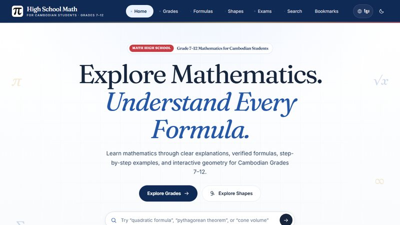

High School Math
A free, bilingual (English & Khmer) mathematics textbook and interactive lab for Cambodian students in Grades 7–12 — built to replace flat formula sheets with lessons students can explore, practise and test themselves on.

The problem
Cambodian secondary students mostly learn from printed formula lists: formulas without derivations, few worked examples, and almost nothing in Khmer that lets them practise and check their own answers.
The goal was a single place that follows the national MoEYS curriculum, explains why each formula works, and lets students practise and sit realistic mock exams — free, in both languages, and usable on a cheap phone with a weak connection.
By the numbers
What I built
Curriculum tracks
Grades 7–12 organised into 8 subject families and 27 subjects, each topic with theory, formulas, worked examples and exercises.
Shape Lab (2D & 3D)
12 inline-SVG 2D shapes and 8 3D solids on a custom isometric canvas, with sliders and exact answers in π and surds.
National exam lab
Timed mock papers for the Grade 9 Diploma and Grade 12 BacII with the official A–F MoEYS grading and a printable layout.
English & Khmer
The whole interface and lesson content switch language, using MoEYS classroom terminology and dedicated Khmer fonts.
Function grapher
Plots lines, parabolas, polynomials, trig and root functions with intercepts, vertex, domain & range and a point tracer.
Instant search
An in-memory index over formulas, variables, theorems and bilingual synonyms — results without a single network request.
Stack & key decisions
No backend at all
Search, geometry, exams and progress all run in the browser, with progress saved to localStorage. No accounts, cookies or tracking — and the site keeps working offline once loaded.
A custom 3D renderer instead of Three.js
The 3D solids use a hand-written isometric pipeline on a 2D canvas (rotation matrices, projection, depth sorting) in under 650 lines, keeping the bundle small for low-end phones.
A 7-step format for every worked example
Problem → Given → Formula → Substitution → Calculation → Answer → Units. One consistent shape makes 148 examples easy to follow and easy to verify.
Tested at three screen sizes
Vitest covers the maths and search logic; Playwright runs end-to-end journeys at desktop, tablet and mobile widths.